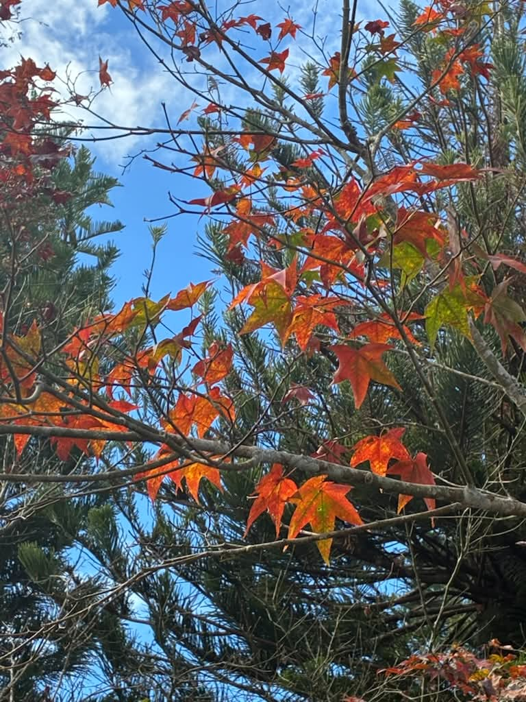

中級訓練
馬那邦山｜走進秋日楓紅的山林

馬那邦山位於苗栗縣大湖鄉與泰安鄉交界， 海拔約 1,406 公尺，是台灣著名的賞楓登山路線。 山林間保有豐富的自然生態， 秋冬時節更有機會欣賞美麗的楓紅景色。 沿途也能看見與當地歷史相關的遺跡， 是一座結合自然景觀與人文特色的山岳。
登山路線資訊
- 地點：苗栗縣大湖鄉、泰安鄉交界
- 海拔：約 1,406 公尺
- 難度：中級訓練
- 常見路線：珠湖登山口或天然湖登山口往返
- 路線特色：森林步道、階梯、陡坡與歷史遺跡
- 建議對象：具備基本登山體能及郊山經驗者
登山裝備建議
建議攜帶足夠飲水、行動糧、雨具及保暖衣物。 部分路段坡度較大，可依個人需求使用登山杖。 秋冬登山應留意氣溫變化及濕滑落葉。
登山注意事項
馬那邦山有不同登山入口， 出發前應確認預定路線與停車位置。 賞楓季節可能有較多遊客， 建議提早出發並預留足夠的下山時間。 遇到下雨或濃霧時，應特別注意山徑濕滑。